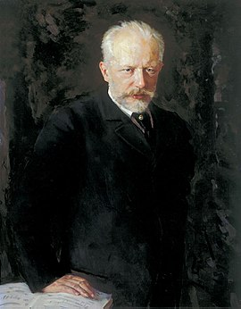

Пётр Ильи́ч Чайко́вский
1840-1893
Русский композитор, педагог, дирижёр и музыкальный критик
Пётр Ильич Чайковский родился 25 апреля (7 мая) 1840 в посёлке Воткинск Сарапульского уезда Вятской губернии (ныне город Воткинск, Удмуртия) при Камско-Воткинском заводе.

Главные вехи жизни великого композитора
Главные годы жизни композитора
- (1840-1865) Детство и юность
- (1866-1878) В Москве
- (1879-1893) Годы мировой славы